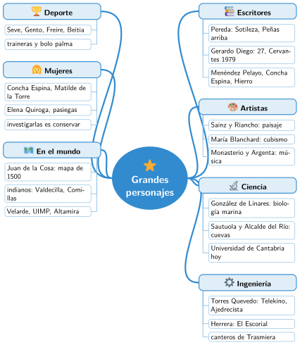

Bloque II · Cantabria, patrimonio cultural
UD08 Grandes personajes de Cantabria
Sesiones
- Sesión 8.1 Escritores: Pereda y Gerardo Diego
- Sesión 8.2 Pintores, escultores y músicos
- Sesión 8.3 Científicos
- Sesión 8.4 Ingenieros y arquitectos
- Sesión 8.5 Deportistas
- Sesión 8.6 Mujeres que dejaron huella
- Sesión 8.7 Personajes que proyectan Cantabria
Al terminar la unidad
Mapa mental de la unidad

✏️ Repasa la unidad con el mapa: tapa una rama y explica en voz alta lo que pone.